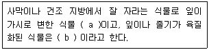
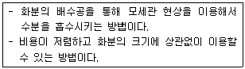
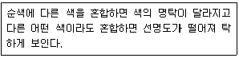
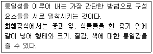
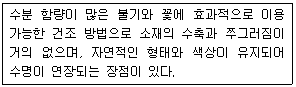
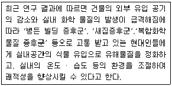

화훼장식기능사 (2013-07-21 기출문제)
1과목: 화훼장식재료
1. 1년초의 설명으로 옳은 것은?
- 씨를 뿌리면 싹이 터서 꽃이 피고 열매를 맺은 뒤 1년이 내에 생을 마치는 식물이다.
- 1년초의 씨뿌리기는 봄에만 가능하다.
- 봄애 뿌리는 대표적인 초화는 팬지, 프리뮬러, 데이지 등이 있다.
- 1년초는 대부분 화단에 심으며 용기에 심어 이용하지는 않는다.
(정답률: 95%)

2. 형태에 따른 분류에서 선형(line) 꽃에 해당하지 않는 것은?
- 글라디올러스
- 리아트리스
- 스토크
- 카틀레아
(정답률: 77%)
3. 꽃의 기관 중 가장 먼저 분화되는 것은?
- 꽃받침
- 꽃잎
- 수술
- 암술
(정답률: 75%)
4. 음지식물에 대한 설명으로 틀린 것은?
- 5000~10000 lux에서 잘 자라는 식물이다.
- 주로 꽃을 감상하기 위해 식재하는 식물이다.
- 열대 원산의 관엽식물이 대부분을 차지한다.
- 디펜바키아, 네프로네페스, 스킨답서스가 대표적이다.
(정답률: 69%)
5. 화훼장식용 도구의 사용에 대한 설명으로 틀린 것은?
- 플로랄 테잎이란 식물에 철사를 연결하여 줄기를지지 하였을 경우, 접착성으로 줄기와 철사의 접합을 돕는다.
- 라피아는 꽃다발을 단단하게 묶는데 사용한다.
- 워터 픽은 플라스틱 제품으로서 그속에 물을 넣어 식물을 꽃아 묶음 작업에 많이 사용한다,
- 전지가위는 리본, 직물, 종이의 절단에 사용한다.
(정답률: 82%)
6. European 꽃꽂이를 잘 이해하려면 소재를 분류하고 관찰하는 능력이 필요하다. 다음에서 분류관찰에 해당되지 않는 것은?
- 식물의 모양 즉 자라는 모습이나 주변 환경
- 오브제를 이용한 비사실적 구성능력
- 꽃이 생장하는 방향 즉 움직이는 특성
- 감각으로 느끼는 식물의 표면구조
(정답률: 77%)
7. 잎의 크기가 큰 열대원산의 식물로서 천남성과 식물은?
- 몬스테라
- 팔손이
- 종려
- 엽란
(정답률: 75%)
8. 여러해살이 화초로만 짝지어진 것은?
- 코스모스, 국화, 금잔화
- 옥잠화, 샐비어, 알로에
- 구절초, 원추리, 분꽃
- 옥잠화, 국화, 원추리
(정답률: 52%)
9. 절화용 용기의 조건으로 거리가 먼 것은?
- 물과 꽃줄기를 충분히 담을 수 있어야 한다.
- 전체 꽃의 무게를 지탱할 수 있는 무게를 가져야 한다.
- 줄기를 고정하기 위한 어떤 도구도 감출 수 있어야 한다.
- 장식 목적과 효과에 따라 배수구가 있는 경우가 일반적이다.
(정답률: 80%)
10. 데코라고나무의 학명 표기법으로 옳은 것은?
- Ficus elastica Roxb. cv. Decora
- Ficus elastica Roxb. cv. 'Decora'
- Ficus elastica Roxb. cv. Decora
- Ficus elastica Roxb. cv. 'Decora'
(정답률: 41%)
11. 화훼원예학에 대한 설명으로 거리가 먼 것은?
- 집약적이며, 기술적인 재배가 요구되는 화초와 화목을 대상으로 연구한다.
- 화훼식물의 분류 특징과 재배관리를 연구한다.
- 화훼식물의 번식과 품종개량, 병충해 방제를 연구한다.
- 화훼식물의 이용과 장식에 관한 것만 연구한다.
(정답률: 92%)
12. 분화장식에 대한 설명으로 틀린 것은?
- 천남성과 식물이나 접란 증이 관엽식물의 뿌리를 토양 대신에 물속에 넣어 키우는 것을 수경재배(watercul ture)라 한다.
- 유리용기에 수생식물을 심고 한쪽으로 물고기를 넣어서 같이 키우는 것을 비바리움(vivarium)이라 한다.
- 접시처럼 넓고 깊이가 얕은 용기에 식물을 심어 작은 정원을 만드는 것을 디쉬가든(dish garden)이라고 한다.
- 바구니나 플라스틱분 등의 용기에 덩굴식물을 심어 아래로 늘어뜨리는 것을 걸이분(hanging basket)이라고 한다.
(정답률: 85%)
13. 개나리의 학명이 바르게 표기된 것은?
- Cercis chinensis
- Magnolia denudata
- Forsythia koreana
- Hibiscus syriacus
(정답률: 73%)
14. 다음 괄호( )안의 용어로 바르게 짝지어진 것은?

- a:다육식물, b:선인장
- a:선인장, b:다육식물
- a:선인장, b:수생식물
- a: 고산식물, b: 다육식물
(정답률: 96%)
15. 화훼장식용으로 이용되고 있거나 이용 가능한 백합과 식물 중 울릉도 특산물인 것은?
- 말나리
- 섬말나리
- 참나리
- 틈나리
(정답률: 77%)
16. 실내의 분화 장식물에 있어서 우선적으로 고려해야 하는 사항이 아닌 것은?
- 유행하는 식물의 선택
- 실내의 기능적인 면과 이용자의 기호도
- 실내의 환경조건
- 바닥재료, 벽지 등 실내 분위기
(정답률: 86%)
17. 절화수명에 대한 설명으로 틀린 것은?
- 일반적으로 국화는 카네이션보다 절화수명이 길다.
- 극락조화는 3~4℃ 에서는 저온해를 받는다.
- 델피니움은 습식저장하는 것이 좋다.
- 금어초는 에틸렌의 의한 피해를 거의 받지 않는다.
(정답률: 78%)
18. 화훼장식물 제작을 위해 절화는 선택할 때 고려사항으로 틀린 것은?
- 꽃, 잎, 줄기의 균형이 맞아야 한다.
- 성숙도가 적당하고 상처가 없어야 한다.
- 각 묶음이 정확한 본수를 가져야 한다.
- 줄기는 될수록 긴 것이 다루기에 편리하다.
(정답률: 83%)
19. 절화보존제에 첨가하는 자당(sucrose)에 대한 설명으로 틀린 것은?
- 수확 후 일어나는 대사작용에 이용된다.
- 첨가 농도는 화훼류에 관계없이 일정하다.
- 가정용 설탕으로 대체가 가능하다.
- 절화에 광합성 산물을 인위적으로 첨가하는 효과가 있다.
(정답률: 87%)
20. 결혼식에서 신랑 상의의 칼라에 있는 단축구멍에 다는 코사지(body corsage)의 명칭은?
- 부토니아(boutonniere)
- 브레스렛(bracelet)
- 숄더(shoulder)
- 헤어오너먼트(hair ornament)
(정답률: 94%)
2과목: 화훼장식 제작 및 유지관리
21. 화훼장식에서 철사를 꽃의 줄기 속으로 집어 넣어 눈에 보이지 않도록 하는 기법은?
- 시큐오링(securing)
- 소잉(sewing)
- 인서션(insertion)
- 헤어핀(hair-pin0
(정답률: 89%)
22. 분화류의 관리 및 환경에 대한 설명으로 틀린 것은?
- 관엽류는 대부분 저온다습한 조건에서 생육이 왕성하다.
- 관엽류는 겨울철에 동해나 저온장해를 받지 않도록 주의 해야 한다.
- 분화류는 실내나 실외로 이동될 대 환경의 급격한 변화로 인해 스트레스를 많이 받는다.
- 관엽류는 잎 청소를 해주지 않으면 병충해 발생이 쉬워진다.
(정답률: 80%)
23. 용기 위에 꽃다발을 얹은 것처럼 구성한 디자인으로 줄기와 꽃이 자연스럽게 연결되어 있는 것처럼 보이도록 양쪽에서 연결하여 꽂는 디자인의 형태는?
- 대각선형(diagonal style)
- 나선형(spiral style)
- 스프레이형(spray style)
- 수평형(horizontal style)
(정답률: 67%)
24. 줄기 배열에 따른 꽃꽂이의 형태에 대한 설명으로 틀린 것은?
- 방사선 배열은 한 개의 초점에서부터 다방면으로 전개되는 방법이다.
- 감는선 배열은 서로 구부러져서 휘감기는 유연한 선의 흐름으로 이루어진 방법이다.
- 병렬선 배열은 여러 개의 초점으로부터 나온 줄기를 수직방향으로만 배열하는 방법이다.
- 교차선 배열은 여러 개의 초점으로부터 나온 줄기의 선이 여러 각도의 방향으로 뻗어서 엇갈리게 배열하는 방법이다.
(정답률: 74%)
25. 핸드타이드 부케를 만들 때 유의해야 할 점이 아닌 것은?
- 줄기는 한 방향으로 나선형이 되도록 구성한다.
- 묶은 점은 느슨하게 묶어야 줄기가 잘 펼쳐지고 상하지 않는다.
- 묶은 점은 되도록 가늘게 필요한 만큼의 폭으로 묶는다.
- 묶은 점 아래 부분의 줄기는 깨끗이 다듬어 준다.
(정답률: 89%)
26. 순화에 대한 설명으로 옳은 것은?
- 생산지에서 소비자에 이르기까지 분화식물의 신선도를 유지하기 위해서는 한 단계의 순화과정이면 충분하다.
- 순화란 식물이 새로운 환경에 적응하는 것을 말한다.
- 순화가 이루어진 식물과 그렇지 않은 식물은 외형적인 특성 차이가 없다.
- 순화가 이루어진 식물과 그렇지 않은 식물은 광합성 능력에 큰 차이가 없다.
(정답률: 86%)
27. 신부부케의 제작 방법에 따른 분류로 가장 적합한 것은?
- 프레젠테이션 부케, 웨딩 부케
- 스테이지 부케, 프렌치 부케
- 스프레이 부케, 핸드타이드 부케, 스파이럴부케, 파랄렐부케
- 철사를 이용하는 와이어링 부케, 핸드타이드 부케, 플로랄폼 이용하는 부케
(정답률: 64%)
28. 바인딩에 대한 설명으로 옳은 것은?
- 기능적인 목적보다는 특수한 요소를 강조할 때 사용한다,
- 밀집이나 옥수수 다발 등과 같은 다량의 소재들을 함께 묶는 기법이다.
- 장식적인 목적과 동시에 수직적 표현을 하기 위한 것이다.
- 세 줄기 이상의 많은 줄기들을 함께 묶고, 묶은 끈으로 소재가 지탱되는 기법이다.
(정답률: 75%)
29. 식물이 자연의 식생에서 보여주고 있는 모습과는 관계없이 디자이너의 의도로 소재를 자유롭게 인위적으로 구성하는 스타일의 조형형태는?
- 평행적 스타일
- 장식적 스타일
- 정원식 스타일
- 구조적 스타일
(정답률: 91%)
30. 주지(主枝) 방향에 의한 분류에 해당하지 않은 것은?
- 부화형 (俘花型)
- 경사형 (傾斜型)
- 직립형 (直立型)
- 하수형 (下垂形)
(정답률: 86%)
31. 절화의 수확 후 저온처리 효과가 아닌 것은?
- 에틸렌 발생 촉진
- 절화수명 연장
- 생리대사 억제
- 호흡 억제
(정답률: 82%)
32. 공간장식 계획에서 가장 먼저 고려해야 하는 것은?
- 도면 및 서류 작성
- 작품의 형태 결정
- 이미지 구축 및 디자인
- 대상공간의 특징 및 규모 파악
(정답률: 93%)
33. 화훼류 재배 배양토의 가장 적정한 pH 범위는?
- pH 3.0 ~ 3.5
- pH 4.0 ~ 4.6
- pH 5.0 ~ 7.0
- pH 8.0 ~ 9.0
(정답률: 67%)
34. 0 ~ 4℃로 저장하면 저온장해를 받는 것은?
- 국화
- 장미
- 카네이션
- 안수리움
(정답률: 81%)
35. 디자인에서 어떤 부위를 강조하거나 아름답게 보이게 하기 위하여 그 주위를 둘러싸 그 속을 바라보도록 구성하는 방법은?
- 새도잉
- 프레이밍
- 시퀸싱
- 클러스터링
(정답률: 68%)
36. 구조적 구성에 대한 설명으로 가장 적합한 것은?
- 전통적이며 우아하고 여성적이다.
- 아크릴이나 나무로 만들어진 틀이나 골조 안에 생화 또는 보존화의 다양한 소재를 붙여서 평면으로 구성한다.
- 소재의 표면구조를 강조하기 위해 천, 털실, 깃털 등의 인공소재와 식물소재를 조합하기도 한다.
- 비사실적이며 순수한 구성미의 창작 작품이다.
(정답률: 56%)
37. 그루핑(grouping)의 대상으로 가장 거리가 먼 것은?
- 같은 색
- 같은 높이
- 같은 종류
- 같은 질감
(정답률: 66%)
38. 춘화작용(vernalizaton)에 대한 설명으로 틀린 것은?
- 가을뿌림 한해살이 화초의 경우 종자 단계에서 저온에 감응하여 개화하는데 이것을 종자 춘화라고 한다.
- 식물체의 상태에 따라 저온에 대한 감응이 다르다.
- 저온처리 직후에 고온을 겪에 되면 저온에 의한 춘화현상이 진행되는 경우가 있다.
- 춘화의 유효한 온도 범위는 -5~15℃ 사이이다.
(정답률: 57%)
39. 다음 설명하는 관수 방법으로 가장 적합한 것은?

- 파이프 관수
- 저면관수
- 선행적 구성
- 점적관수
(정답률: 78%)
40. 자연의 작품 속에서 사실적으로 표현하는 것으로, 식물소재 개개의 생태적 모습이나 특성을 고려하는 형태는?
- 장식적 구성
- 기하학적 구성
- 선행적 구성
- 식생적 구성
(정답률: 91%)
3과목: 화훼장식론
41. 교차(cross)에 대한 설명으로 틀린 것은?
- 여러 개의 선이 여러 각도의 방향으로 서로 엇갈리고 있는 경우를 말한다.
- 꽃이나 식물의 꽂는 지점이 겹쳐야 하므로 그룹으로 꽂아준다.
- 대칭이나 비대칭에 상관없이 배열이 분명해야 한다.
- 평행 형태에서 변형된 형태이다.
(정답률: 64%)
42. 누름꽃(압화)을 이용한 장식물 제작에 대한 설명으로 가장 거리가 먼 것은?
- 생화를 이용한 장식물이 일시적인 것에 비해 반영구적으로 보존이 가능하다.
- 악세사리, 열쇠고리 등에 누름 꽃을 장식한 후 자외선 경화수지로 매몰시켜 영구적으로 보존한다.
- 디자인 요소와 원리를 적용하여 작품을 구성해야 한다.
- 유리를 이용한 액자제작과 같은 밀폐되는 압화 장식물 제작 시에는 뒷면에 흡습제를 부착시키지 않아도 된다.
(정답률: 80%)
43. 다음은 무엇에 대한 설명인가?

- 명도
- 채도
- 색상
- 색채
(정답률: 70%)
44. 화훼장식 디자인 원리 중 반복에 대한 설명은?
- 일정한 간격을 두고 되풀이 되는 것을 말한다.
- 미적 질서의 근본으로 근접, 전이로 표현된다.
- 형태나 색채상으로 움직이는 느낌을 준다.
- 많고 적음, 길고 짧음, 부분과 부분에 대한 차이다.
(정답률: 76%)
45. 다음 설명하는 통일의 표현방법은?

- 근접
- 반복
- 전이
- 균형
(정답률: 64%)
46. 화훼장식의 설명으로 틀린 것은?
- 화훼장식을 구성하는 시각적 특성을 디자인 요소라고 한다.
- 화훼장식의 범위는 실내외공간에 해당된다.
- 화훼장식은 절화만 이용한다.
- 화훼장식의 기원은 종교의식에서 출발하였다.
(정답률: 88%)
47. 화훼장식의 심리적 기능은 창작과정의 기능과 감상과정의 기능으로 나눌 수 있다. 심리적 기능에 대한 설명으로 옳은 것은?
- 삼국시대에는 화훼장식이 정신수양의 주요 수단이었다.
- 창작과정의 기능에는 전위와 승화의 과정을 통해 부정적인 감정 반응들을 완화시키는 것이 있다.
- 감상과정의 기능에는 자립능력 배양이 있다.
- 감상과정의 기능에는 자아정체감의 향상이 있다.
(정답률: 57%)
48. 건조된 방향성 식물의 꽃과 잎, 열매 등에 정유(essential oil)를 첨가시키는 것으로 좋은 향기와 함께 실내 장식용으로 좋은 건조소재 장식은?
- 리스
- 갈란드
- 콜라쥬
- 포푸리
(정답률: 92%)
49. 깊이감을 주는 방법으로 적합하지 않은 것은?
- 줄기선의 각도를 조절한다.
- 꽃을 부분적으로 겹치게 배열한다.
- 색, 크기 질감의 변화를 이용한다,
- 선명하고 짙은 색은 뒷부분에 높게, 옅고 가벼운 색은 앞부분에 낮게 배치한다.
(정답률: 63%)
50. 다음 설명하는 건조 방법은?

- 자연조건
- 동결조건
- 누름건조
- 열풍조건
(정답률: 79%)
51. 화훼장식 디자인의 원리 중 비례(proportion)에 대한 설명으로 틀린 것은?
- 비례는 균형과 밀집한 관계를 가지고 있다.
- 비례는 통일과 변화를 쉽게 조절할 수 있는 원리이기도 하다.
- 화훼장식물을 테이블에 놓을 때 반드시 한가운데 놓아야 하며 이는 가장 자연스러운 시각적 효과를 가져다준다.
- 디자인의 비례가 적절하지 못하면 조화롭지 못하고 균형이 이루어지지 않는다.
(정답률: 91%)
52. 다음 설명하는 화훼장식의 기능으로 가장 적합한 것은?

- 환경적 기능
- 치료적 기능
- 장식적 기능
- 건축적 기능
(정답률: 83%)
53. 누름 건조에 대한 설명으로 옳은 것은?
- 압화라고도 불리며 입체적인 장식에 주로 이용된다.
- 고가의 장비와 시설이 필요하다
- 꽃이나 잎을 흡습지 사이에 넣고, 눌러서 건조 시킨다.
- 채소와 과일 등은 건조가 불가능하다.
(정답률: 82%)
54. 화훼장식 디자인 요소에 대한 설명으로 틀린 것은?
- 직선은 이상적이며 굳건한 느낌을 준다.
- 선은 사람의 시선을 움직여 전체 구성을 통합하는 골격이 된다,
- 점의 이동이 선으로 느껴지기 위해서는 점의 크기보다 이동량이 적어야 한다,
- 사선은 움직임과 흥분의 느낌을 준다.
(정답률: 83%)
55. 그리스 · 로마 시대에 유행했던 화훼장식물이 아닌 것은?
- 리스
- 갈란드
- 비더마이어
- 회관
(정답률: 82%)
56. 보색 대비가 아닌 것은?
- 빨강(R) - 청록(BG)
- 노랑(Y) - 남색(PB)
- 파랑(B) - 주황(YR)
- 녹색(G) - 보라(P)
(정답률: 79%)
57. 초점에 올렸던 집중적인 시선을 디자인의 다른 모든 부분으로 옮겨가게 하는 특성이 있으며, 반복적으로 표현될 수 있는 디자인 요소는?
- 강조
- 조화
- 리듬
- 동일
(정답률: 79%)
58. 로코코 시대의 미학적인 특징에 대한 설명으로 옳은 것은?
- 화려하면서도 여성스러운 스타일이 주를 이루었으며, 아름다운 기품을 표현하기 위해 파랑, 자주빛의 색상을 많이 사용하였다.
- 조화(造花)가 가장 많이 유행했던 시대이다.
- 모방에서 창조로 넘어가는 대표적인 시대이다.
- 루이 14세의 검소한 궁중생활을 위해 단순한 꽃장식이 주로 행해졌던 시대이다.
(정답률: 73%)
59. 화훼장식의 목적별 분류에 해당하는 것은?
- 절화장식, 분화장식
- 실내장식, 실외장식
- 상업용. 혼례용, 근조용. 장식용
- 꽃꽂이, 꽃다발, 꽃바구니, 테이블장식, 식물심기
(정답률: 80%)
60. 조선시대 강희안이 집필한 화훼에 관한 전문 서적은?
- 양화소록
- 산림경제
- 임원십육지
- 성소부부고
(정답률: 85%)